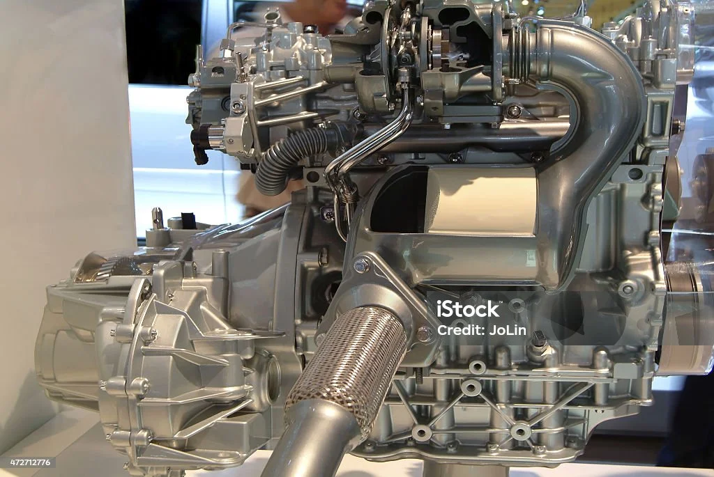
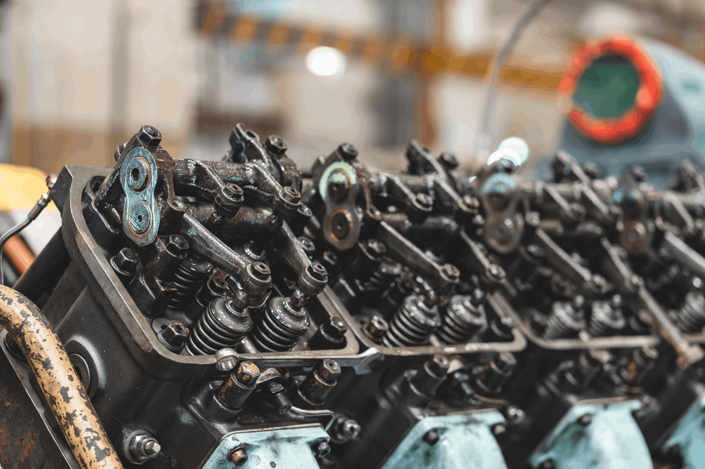
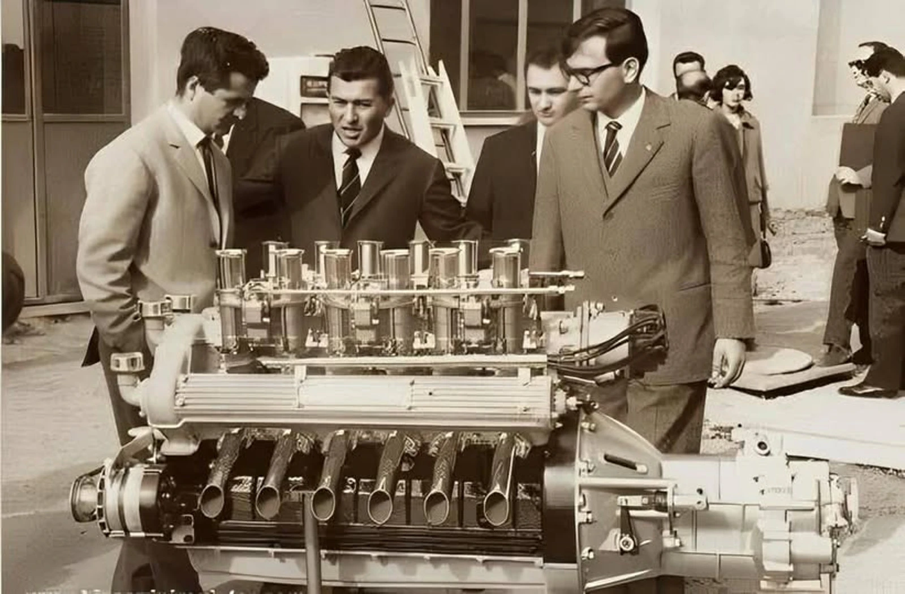

Hay motores que simplemente impulsan un automóvil. Y hay otros que despiertan emociones desde el primer instante en que cobran vida.
El V12 pertenece a esa segunda categoría.
Durante décadas, esta configuración se convirtió en el corazón de algunas de las máquinas más admiradas del mundo. No solo por su potencia, sino por la manera en la que entregaba cada aceleración, por la suavidad de su funcionamiento y por un sonido capaz de poner la piel de gallina incluso antes de comenzar a conducir.
Hoy, mientras la industria avanza hacia la electrificación y nuevas formas de movilidad, el V12 continúa ocupando un lugar especial en la memoria de quienes entienden que un automóvil puede ser mucho más que un medio de transporte.
Una obra de ingeniería

Configuración V12 — Doce cilindros en perfecta armonía
Un motor V12 está formado por doce cilindros distribuidos en dos bancadas de seis, creando una configuración en forma de "V". Esta arquitectura permite un equilibrio mecánico excepcional, reduciendo vibraciones y ofreciendo una entrega de potencia extremadamente suave y progresiva.
Más que una búsqueda de velocidad, el V12 representa una filosofía de ingeniería donde cada componente trabaja en perfecta armonía para ofrecer una experiencia refinada y emocionante.
Más allá de la potencia
Hablar de un V12 no significa hablar únicamente de cifras. Su verdadero encanto reside en las sensaciones.
La respuesta del acelerador, el sonido que acompaña cada cambio de revoluciones y la forma en la que entrega la potencia convierten cada recorrido en una experiencia difícil de olvidar.
Los automóviles que hicieron historia

De la F50 al DBS — Una línea de tiempo de leyendas
Ferrari F50
Inspirado directamente en la Fórmula 1, llevó la competición a las calles como pocos automóviles han conseguido.
Lamborghini Diablo
El superdeportivo que marcó toda una generación gracias a su diseño atrevido y su imponente motor V12.
Pagani Zonda
Una combinación perfecta entre arte, fibra de carbono e ingeniería de precisión.
Ferrari 812 Superfast
La demostración de que un V12 atmosférico todavía podía emocionar en pleno siglo XXI.
Aston Martin DBS
Elegancia británica impulsada por una de las configuraciones mecánicas más refinadas jamás construidas.
Un sonido imposible de reemplazar

La firma sonora del V12 — Una melodía mecánica inconfundible
Cada motor tiene personalidad. Pero pocos poseen una identidad tan reconocible como un V12. Su sonido cambia con las revoluciones, pasando de un funcionamiento refinado a una melodía mecánica que ha acompañado algunos de los deportivos más icónicos de la historia.
Un futuro cada vez más exclusivo
Las normativas medioambientales, la electrificación y el desarrollo de nuevas tecnologías han reducido progresivamente la presencia de los motores V12. Hoy sobreviven únicamente en modelos muy exclusivos, convirtiéndose en una de las últimas expresiones de una ingeniería que marcó una época.
Quizá su tiempo en las líneas de producción esté llegando a su fin. Pero su legado difícilmente desaparecerá.
Más que un motor
El V12 nunca fue únicamente una configuración mecánica. Representa una época en la que la ingeniería buscaba emocionar tanto como impresionar.
Porque las cifras pueden quedar atrás.
Las emociones permanecen.